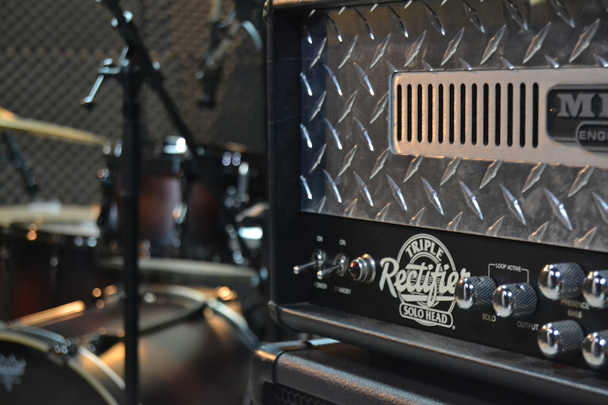

So you have a band, some kick-ass songs, a couple of mics and some time on your hands. That’s pretty much all you need to record a pretty decent song, an EP or an album… that and a bunch of years of experience in music production. This last requisite is usually the big problem, this guide aims at helping you learn both some tricks of the trait and some common pitfalls.
Recoding extreme music is particularly difficult, because all the instruments are trying to jump out of the song and punch you in the face. Keeping them under control requires a lot of insight about what’s going on, from the guitar strings gauge to the amount of compression on the snare drum. By following all the steps on this guide, you can avoid many errors and learn workarounds for some common problems.
Although most of the information here applies to any genre, I try to specialize as much as I can in recording metal music. As such I will take as granted many premises that may not apply in other contexts. I assume your music has a couple of distorted guitars, heavy drumming, a loud bass, a screaming voice and maybe a layer of keyboards.
All these tips and tricks sum up what I have learned so far while trying to record metal, therefore some of them may be sub-optimal, inaccurate or plain wrong. This is just a compilation of what I know and not of what one should know. Nonetheless, for someone who is taking the first steps in producing, this may be an invaluable guide. I would take great value from reading this some years ago.
I won’t try to explain absolutely all you need to know, there is no point in explaining how to tune a guitar, how to warm up your voice, or how to use that particular multi-track recording software. All of those things are crucial, but there are already tons of great resources online that will give you all that.
Let’s start by organizing all the steps you need to follow to maximize the quality of your recording. You have probably read this before, but I should emphasize that the earlier the step is, the most important it is. You can remake your mix any day, you cannot improve a lousy performance, or the sound of a incorrectly placed mic, and there is no such thing as high standards in any of these steps. Aim at perfection and if you’re lucky you’ll get a fairly decent result.
3 – Planning
4 – Tuning/Preparation
5 – Miking/Recording
6 – Mixing
7 – Mastering
It’s nice to come up with new ideas while recording, music should be organic, alive, in constant motion. You should however know exactly what you’re doing. Every-time a band member says “I never noticed you played that in this part” while already tracking some instrument in the studio, usually means that musical communication fails within the band. That part will probably sound off-key, off-tempo or at least not as good as it could. It's surprisingly common and pretty much separates the bands that sound great from all the others.
Write the whole music down in a MIDI sequencer. All the parts, all the instruments, all the details. This will ensure you have complete knowledge of all notes in all instruments, and allows you to play back what you wrote, so you can clearly hear the interactions between all instruments. It’s frequent to find stuff like unwanted dissonances at this stage. Write again and again that part until you’re happy with the change, don’t settle for a “good-enough” alternative, re-write all the instruments if needed. If something in your music sounds anything less than perfect, work on it. You can also easily change the BPMs to fine-tune the music-speed, just make sure everyone feels comfortable with it and that the music feels right.
The process of creating these sequenced tracks will not only tighten up composition, but also generates sweet sequenced tracks that can be used later on, during tracking of each instrument, as a reference/backing track.
You read about this over and over again. Turns out that if you want to be good at something, you have to practice a lot. It's also quite easier to write some 200bpm-guitar-sweep-picked-diminished-5th-arpeggios than it is to play them back. So it's time to play all the lovely stuff you wrote with the band during the previous step, note by note. Not only each one of you in the respective bedrooms, or parent's garage in the case of the drummer, but also all of you together, in the same room, with real instruments.
Mind the sound quality in your rehearsal room. If you can't hear each others instruments correctly, there is no way you're going to get better. The rehearsal room its where everything comes to place, it's your band's home and should be treated as such. Invest dearly in getting it sounding better, it's of paramount importance, I can't stress this enough. If you can't hear every note of a fellow band member while everyone is playing, we're not there yet. How can you achieve this? It's not trivial and requires some notions on acoustics, but there are some hints that can help quite a lot.
Keep in mind. We're not trying to get a better sound, but a clearer one. You must first hear everything clearly and only then work on the tones.
Drums and drummers are commonly pointed out as the main cause of a loud and muddy sounding rehearsal. Funny enough, that's usually not the case. Most of the low end rumble comes from the bass and guitar amps, in a conjunction with the room acoustic properties. The ear piercing high frequencies on the other hand can be traced back to the cymbals, guitar amps and the room acoustic properties (again).
Hit hard on the drums, but soft on the cymbals. You'll get a more balanced and powerful drum sound, longer lasting cymbals and longer lasting hearing. This is also desirable in the studio while tracking. The mixing engineer will thank you dearly.
Tune your drums while avoiding resonance between them. Make sure that hitting one drum doesn't cause others to resonate. You can achieve this by changing slightly the pitch of one of them. Place some cloth or foam inside the kick drum, pressing the batter head, thus reducing the sustain a bit and giving you a more focused sound.
The bass should be the only instrument constantly generating low frequencies in the room. Since it's pretty much design to do so, chances are it will do so in excess. Boosting the lows in the bass amp is not usually a good idea, and a possible sign that you don't know what you're doing. The perceptibility of the bass should lie around the 800Hz-1kHz, boost that to hear it better while lowering the 300Hz-400Hz.
A guitar has no place in the low end. Doesn't matter how brutal-death-djent you are, that space is taken by the bass... and that's a fat bloke. There is no more room for low frequencies. Big guitar cabinets (4x12) don't care about this and will generate an immense amount of lows, overlapping other stuff that might try to happen on that region. This is even a bigger problem if there are two guitars in the band.
Go for smaller guitar cabinets. A 2x12, or even a 1x12 cabinet, equipped with Celestion V30 is more than enough. Some well constructed 4x12 cabinets do enhance your sound in subtle and interesting ways but believe me, you are far from using any of that. If you can't replace the cabinets for some reason, reduce the lows in the amp, using its EQ.
Don't use any type of reverb effect. Even if it's part of your sound, at this stage it will only hide problems with your performance.
Much like the guitars, the human voice has no place in really low frequencies. Assuming you're connecting the microphone to a mixer, use the low-cut on its channel strip and/or reduce the bass on that channel. You want to keep those 300Hz-and-bellow in check, leaving those frequencies for the guitars, bass and drums. Also, don't sing too close to the mic. Doing so would trigger the proximity effect, generating a crappy sounding low end that, for some reason, metal singers think sound cool.
A rehearsal room should be at least 5 by 5 meters, with non-parallel sound-absorbing walls. This is seldom the case, and you should do what you can to "fix it". Do read this article about acoustics in a control room, or go find a good one online, written by professionals preferably.
Working on all of this will not only give you a better sounding recording, but also a way better live performance.